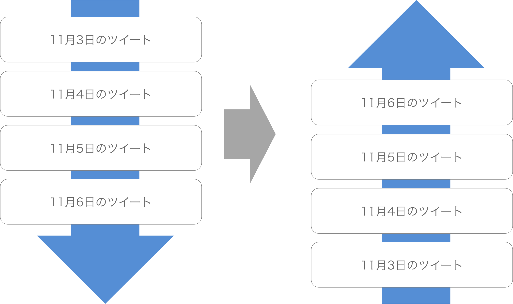
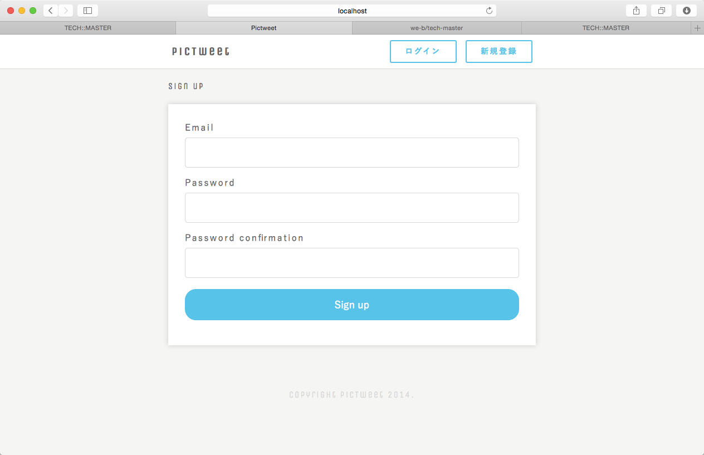

- 終了まであと10日
 大宅 誠人
大宅 誠人
大宅 誠人Railsをもっと詳しく扱うことができるように、追加機能を実装しながら理解を深めていきましょう。
5章までで基本的なRailsアプリケーションを作成することができました。この章では作成したPicTweetに機能を追加して、更なる学習を行なっていきます。
本セクションでの学習を始める前に、必要なファイルの準備を行ないましょう。
※ファイルを追加する際、既に同じ名前のファイルが存在する場合は上書き保存してください
pry-railsというデバッグツールの使い方を学習しましょう。
pry-railsはRails向けに開発されたデバッグツールです。デバッグツールとは、作業の際にバグの有無を確認したり、処理を止めてソースコードが正しいかを確認する際に使用するツールです。デバッグツールを使いこなすことで、より開発がしやすくなります。
pry-railsはGemとして提供されており、本開発では最初にGemのインストールを行なった際にインストールしてあります。またGemをインストールした時はrails sをし直しサーバーを立ち上げ直す必要があります。それはインストールしたGemが反映されるタイミングがサーバーを立ち上げるときだからです。
41 |
gem 'pry-rails'
|
pry-railsの機能の中で最も使用するのはbinding.pryという機能です。これは、binding.pryという文字列をソースコードの中に記述することで、binding.pryという文字列が存在する部分でRailsの処理を止めることが出来るというものです。
1 2 3 4 5 6 7 8 9 10 11 12 13 14 15 16 17 18 19 20 |
class TweetsController < ApplicationController
def index
@tweets = Tweet.all
end
def new
end
def create
Tweet.create(tweet_params)
binding.pry
end
private
def tweet_params
params.permit(:name, :image, :text)
end
end
|
以上のようにbinding.pryという文字列を記述した上でローカルサーバーを立ち上げます。binding.pryを記述したのはツイートを作成する部分の処理です。つまり、PicTweetでツイートの投稿を行なうと処理が止まります。
処理が止まると、以下のような画面がターミナルに表示されます。
1 2 3 4 5 6 7 8 9 10 11 12 13 14 15 16 17 |
Started POST "/tweets" for ::1 at 2012-03-22 09:18:00 +0900
Processing by TweetsController#create as HTML
Parameters: {"utf8"=>"✓", "authenticity_token"=>"FONntu/x3bU5uJ6hJmWtv792TnR7qaOUL7Vv42ObM8OBm3ETF61mgvbaXzEwrby2RDlxQmZApmmR5KpuIgC+tQ==", "name"=>"hoge", "image"=>"http://sample.jpg", "text"=>"Hello World!"}
User Load (0.3ms) SELECT `users`.* FROM `users` WHERE `users`.`id` = 6 ORDER BY `users`.`id` ASC LIMIT 1
Unpermitted parameters: utf8, authenticity_token, name
(0.1ms) BEGIN
SQL (0.2ms) INSERT INTO `tweets` (`image`, `text`, `created_at`, `updated_at`) VALUES ('http://sample.jpg', 'Hello World!', '2015-03-31 05:32:52.087499', '2015-03-31 05:32:52.087499')
(0.4ms) COMMIT
From: /Users/hoge/projects/pictweet/app/controllers/tweets_controller.rb @ line 12 TweetsController#create:
10: def create
11: Tweet.create(tweet_params)
=> 12: binding.pry
13: end
[1] pry(#<TweetsController>)>
|
ここでは、この時点での変数の値を出力したりすることが出来ます。仮に実装を行なった際にエラーが出た場合、複数個のbinding.pryを記述することで処理が正しく行われているのかを確認することができます。
binding.pryで処理を止めた際には、コンソールとほぼ同じことができるので、変数を出力したい際などには出力したい変数を入力することで内容を出力できます。
1 2 3 4 5 6 7 8 9 10 11 |
From: /Users/hoge/projects/pictweet/app/controllers/tweets_controller.rb @ line 12 TweetsController#create:
10: def create
11: Tweet.create(tweet_params)
=> 12: binding.pry
13: end
[1] pry(#<TweetsController>)> tweet_params
Unpermitted parameters: utf8, authenticity_token
=> {"name"=>"hoge", "image"=>"http://images.sample.jpg", "text"=>"Hello World!"}
[2] pry(#<TweetsController>)>
|
処理を再開させたい場合にはexitというコマンドを入力します。exitコマンドを入力すると止まっていた処理が再開し、処理が再開されます。また、exit!とコマンドを入力するとローカルサーバーを終了させることもできます。
1 2 3 4 5 6 7 8 9 10 11 12 13 14 15 16 17 18 19 |
From: /Users/hoge/projects/pictweet/app/controllers/tweets_controller.rb @ line 12 TweetsController#create:
10: def create
11: Tweet.create(tweet_params)
=> 12: binding.pry
13: end
[1] pry(#<TweetsController>)> tweet_params
Unpermitted parameters: utf8, authenticity_token
=> {"name"=>"hoge", "image"=>"http://images.sample.jpg", "text"=>"Hello World!"}
[2] pry(#<TweetsController>)> exit
Rendered tweets/create.html.erb within layouts/application (0.0ms)
Completed 200 OK in 356078ms (Views: 69.0ms | ActiveRecord: 3.0ms)
Started GET "/assets/setting-6304eaa3803ad71fa1d106214a7dcf02.css?body=1" for ::1 at 2012-03-22 09:18:00 +0900
Started GET "/assets/users-bfd9b813b3d5121ad480bb8a65fd9bbc.css?body=1" for ::1 at 2012-03-22 09:18:00 +0900
|
paramsを取得するでは、binding.pryを使ったデバックを体験するために、実際にbinding.pryを利用して処理を止め、ビューから送られてくるパラメータであるparamsを表示してみましょう。
paramsについてわからなければ、用語一覧集:paramsを参照してください。
1 2 3 4 5 6 7 8 9 10 11 12 13 14 15 16 17 18 19 20 |
class TweetsController < ApplicationController
def index
@tweets = Tweet.all
end
def new
end
def create
Tweet.create(tweet_params)
binding.pry
end
private
def tweet_params
params.permit(:name, :image, :text)
end
end
|
ローカルサーバーを立ち上げていない場合はターミナルでrails sコマンドを実行してからlocalhost:3000/tweetsにアクセスし、右上の「投稿する」ボタンを押してください。
「imageURL」「text」各欄を入力し、「SENT」ボタンを押してください。すると、ページ遷移せずに現在の画面にとどまり続けます。

paramsと入力してくださいこの時、サーバーを立ち上げているターミナル(rails sコマンドを実行したターミナル画面)を見ると、以下のようにコマンドが入力できるようになっています。
中断した部分までで定義されている変数やメソッドを呼び出すことができるので、paramsと入力しましょう。以下のようなハッシュが表示されれば成功です。
1 2 3 4 5 6 7 8 |
[1] pry(TweetsController)> params
#paramsと入力し、実行
=> {"utf8"=>"✓",
"authenticity_token"=>"/3QchQigdEcpc2VaOn+6IGIV14x1iJ5bDsM7GI5NA6k=",
"image"=>"http://sample/aaaabbbbccc.jpg",
"text"=>"hello!",
"action"=>"create",
"controller"=>"tweets"}
|
投稿フォームではhtmlのinput要素を使います。
「SENT」ボタンが押されリクエストされると、input要素の属性としてname="〇〇"と書いた部分がparams内のキーに、入力欄に入力された文字がそのキーの値になり送信されます。
binding.pryで処理を中断している間はその時点で使える変数やメソッドを呼び出せるので、paramsはこのcreateアクションの中で使うことができるハッシュのようなもの、ということになります。
params[:text]と入力し、実行してください続いて、paramsはハッシュなのでのキーを指定してそのキーの値を表示してみます。そのままターミナルにparams[:text]と入力し、実行してください。
1 2 3 |
[1] pry(TweetsController)> params[:text]
#params[:text]と入力し、実行
=> "hello!"
|
このように、先ほど投稿ページの「text」欄で入力したテキストが表示されます。
exitコマンドを実行してくださいこのままではいつまで経っても、サーバーの処理がbinding.pryで中断されたままです。
exitコマンドを実行し、処理を再開しましょう。
1 2 |
TweetController>exit
#処理を再開
|
binding.pryを削除してください。binding.pryが残っていると、また同じ操作をした際に処理が中断してしまいます。忘れずに消去しておきましょう。
paramsやストロングパラメーターに関しては処理の流れが複雑ですので、以下の動画を見て学習内容を整理しましょう！
ツイート一覧のページを、アプリケーションのトップページに設定しましょう。
ウェブサイトへアクセスする際などに使用するURLには、ホスト名とパスの2つの部分が存在します。「localhost:3000」や「pictweet.me」のように、パスを付けないホスト名だけのURLのことをルートパスと言います。
現在のPicTweetは「/tweets」にアクセスするとツイートの一覧画面が表示されます。今回はルーティングを追記してルートパスにアクセスした際にツイート一覧画面が表示されるようにしましょう。そのためには、routes.rbにルートパス専用のルーティングを設定する必要があります。以下の例のように、root コントローラー名#アクション名と書きます。
1 2 3 |
Rails.application.routes.draw do
root 'コントローラー名#アクション名'
end
|
http://localhost:3000にアクセスして、ルートパスががきちんと反映されているか確認しましょう。
こちらにアクセスすると、http://localhost:3000/tweetsにアクセスした画面と同じ画面になっているのが確認できます。これは、ルートパスによってtweets_controllerのindexアクションが動いているということです。
現在のPicTweetは、新しく投稿したツイートが１番下に表示されています。この表示の順番を最新のツイートが一番上に来るように表示させましょう。

orderメソッドは、テーブルから取得してきたインスタンスたちを並び替えるメソッドです。例えば「Contents」という名のテーブルがあり、以下のようにContentクラスからallメソッドを利用して全てのレコードを取得してきたとします。この時、orderメソッドを利用して取得してきたレコードを並び変えることができます。
1 2 3 |
def index
@contents = Content.all.order("id DESC")
end
|
allメソッドを利用した場合、通常であればレコードはid順に取得されますが、上記のようにorderメソッドの引数として("id DESC")とすれば、レコードは逆順に並び替えられます。
orderメソッドは引数として("テーブルのカラム名 並び替える順序")という形を取ります。並び替える順序には、ASC(昇順)とDESC(降順)の2種類があります。
このサンプル画像のURLを使って投稿してみましょう。
最新順になっていれば以下の画像のようにトップページの一番上に投稿したツイートが表示されます。
ツイートの一覧画面にページネーションを実装して、1ページに表示されるツイートの数を5件にしましょう。5件以降は次ページを作成して、そこに表示されるようにしましょう。
ページネーションとは長い文章を複数のページに分割して、各ページへのリンクを並べアクセスしやすくすることです。検索サイトのGoogleなども検索結果の表示にはページネーションを使用しています。
ページネーションを実装する際には「kaminari」というGemをインストールして使用します。またGemをインストールした後はrails sをし直し、サーバーを立ち上げ直す必要があります。インストールしたGemが反映されるタイミングがサーバーを立てるときだからです。
kaminariはRubyのGemの一種です。このGemをインストールすることによって、簡単にページネーションを実装することができます。
1 |
gem 'kaminari'
|
1 2 3 4 |
$ pwd
#現在のディレクトリが~/projects/pictweetであることを確認
$ bundle install
#bundle install の実行
|
1 |
$ rails s
|
1ページに表示されるツイートの情報を5件にするということは、コントローラーからビューに送るツイート情報も5件のみになります。その数を制御するために、kaminariをインストールすると使える2つのメソッドを利用します。
kaminariを導入すると、モデルクラスにpageメソッドが定義されます。このメソッドは、ページネーションにおけるページ数を指定します。
ビューのリクエストの際paramsの中にpageというキーが追加されて、その値がビューで指定したページ番号となります。なので、pageの引数はparams[:page]となります。
perメソッドもpageメソッドと同様、kaminariというgemをインストールすることで利用できるメソッドです。1ページあたりに表示する件数を指定します。perメソッドに引数として渡した数字が、ページネーションが実装されたビューで1ページあたりに表示する件数になります。
上記2つのメソッドは、良く以下のように使われます。
1 |
変数名 = クラスを利用して取得したレコードのインスタンス.page(params[:page]).per(ここに1ページで表示したい件数を入力)
|
さて、今回ページネーションを実装したいのはindexアクションのビューであり、コントローラーで定義しビューに渡すのはtweetsテーブルのレコードです。こちらを踏まえた上で、下記の問題に取り組みましょう。
ページネーションを実装する際にはコントローラーだけでなくビューにも編集を加える必要があります。
ページネーションのリンクを表示したいときに使用するメソッドです。kaminariをインストールすると利用できます。paginateメソッドの引数は、コントローラーで定義した変数を指定します。
1 2 3 4 |
<div class="contents row">
<%= render partial: 'tweet', collection: @tweets %>
<%= paginate(@tweets) %>
</div>
|
これで、ページネーションを実装することができました。
このときデータベースのtweetsテーブルにレコードが６個以上ないとページネーションが表示されません。
tweetsテーブルにレコードが6つ以上あるか確認してください。なければ、レコード数が6個以上になるようレコードを作成しましょう。
下の方に、以下のようにページネーションが表示されていれば成功です。
Twitterなどのウェブサイトにはログイン機能があります。この機能はサインアップしたユーザーに対してアカウントを発行し、そのアカウントで情報を管理することができる機能です。Railsの場合、ログイン機能は「devise」というGemを使用することで簡単に実装することができます。
今回はログイン機能を実装することで、ログインしたユーザーのみがツイートの投稿を行えるようにします。ツイートの閲覧に関してはログインにかかわらずできるようにします。
ログイン機能を実装する際には「devise」というGemをインストールして使用します。またGemをインストールした後はrails sをし直しサーバーを立ち上げ直す必要があります。これはインストールしたGemが反映されるタイミングがサーバーを立てるときだからです。
deviseは、ログイン機能を簡単に作成することができるGemです。ログイン機能をGem無しで実装するのは非常に大変です。しかし、このGemを使うことで比較的簡単に実装することができます。
1 |
gem 'devise'
|
1 2 3 4 |
$ pwd
#現在のディレクトリが~/projects/pictweetであることを確認
$ bundle install
#bundle install の実行
|
1 |
$ rails s
|
deviseを使用するためには、Gemのインストールに加えてdevise専用のコマンドを利用して設定ファイルを作成する必要があります。
1 2 |
$ rails g devise:install
# deviseの設定ファイルを作成
|
deviseを利用する際にはアカウントを作成するためのUserモデルを新しく作成します。作成には通常のモデルの作成方法ではなく、deviseのモデルの作成用コマンドを使用します。
deviseで、ログイン機能をつける概念のモデルを作成する際に利用するコマンドです。モデルに加えて、ログイン機能のために必要なカラムが追加されるマイグレーションファイルなどが生成されます。
1 2 |
$ rails g devise user
# deviseコマンドでモデルを作成
|
1 2 |
$ rake db:migrate
# 作成されたマイグレーションファイルを実行
|
以下のように、usersテーブルが作成されていれば成功です。
マイグレーションファイルを実行してもusersテーブルが表示されない場合は、データベース選択から「データベースを再読み込み」を押すか、左下の再読み込みボタンを押してみましょう。
誰かが未ログイン時にツイート一覧画面を表示した際に、ヘッダーに投稿ボタンの代わりにログインと新規登録ボタンを表示するようにしましょう。
<%=と%>で囲まれた部分をRubyタグと言います。Rubyタグは拡張子が「erb」のビューファイルで使用することが出来ます。Rubyタグを使用して記述されたコードはビューファイルが読み込まれる際にHTMLコードとなって読み込まれます。また-%>のように閉じるタグに-をつける形もあります。このようにすることで、余計な改行を取り除くことができます。
link_toはRubyタグの中で使用することが出来るメソッドです。このメソッドは引数を指定することで様々なリンクを生成します。
通常HTMLコード内でリンクを生成する際にはaタグを使用します。link_toメソッドを使って記述を行なうと、HTMLコードが読み込まれる際にaタグに変換されるので、サイトを表示した際にはaタグと同様に、リンクとして表示されます。今回の実装で追加するログインや新規登録ボタンもこのメソッドを利用して生成します。
1 2 |
<%= link_to 'ツイート一覧へ', '/tweets' %>
# link_toメソッドを使ってリンクを生成
|
また、htmlの要素に指定できるclassなどの属性は、以下の例のように続けてclass: 'sample'などと書くことで付与することができます。
1 2 |
<%= link_to 'ツイート一覧へ', '/tweets', class: 'sample' %>
# 作成したaタグに`class="sample"`属性を付与
|
link_toメソッドがビューファイルとして読み込まれる際には、以下の様なHTMLコードになります。
1 |
<a class="sample" href="/tweets">ツイート一覧へ</a>
|
deviseでログイン機能を実装すると、user_signed_in?というメソッドを使用することができます。これは、ユーザーがサインインしているかどうか検証するメソッドです。
サインインしている場合にはtrueを返し、サインインしていない場合にはfalseを返します。
1 2 3 |
<% if user_signed_in? %>
# ユーザーがサインインしている場合に実行する処理
<% end %>
|
user_signed_in?が返す値は最終的にtrueかfalseになるので、上記の例のようにif文または、unless文とともに使用します。
Prefixとは、ルーティングのパスが入る変数のことです。コントローラやビューなどで呼び出すことで、prefixに入っているパスやURL情報を取得できるようになります。Prefixは、routes.rbの各リクエストにオプションとして設定しますが、記述によっては自動的に作成される場合もあります。
これを確認するには、ターミナルからrake routesコマンドを実行します。すると、以下のような表示になります。
1 2 3 4 5 6 7 8 9 10 11 12 13 14 15 16 17 18 19 20 21 22 23 24 25 26 27 |
#rake routesコマンドの実行
$rake routes
#実行結果
Prefix Verb URI Pattern Controller#Action
new_user_session GET /users/sign_in(.:format) devise/sessions#new
user_session POST /users/sign_in(.:format) devise/sessions#create
destroy_user_session DELETE /users/sign_out(.:format) devise/sessions#destroy
user_password POST /users/password(.:format) devise/passwords#create
new_user_password GET /users/password/new(.:format) devise/passwords#new
edit_user_password GET /users/password/edit(.:format) devise/passwords#edit
PATCH /users/password(.:format) devise/passwords#update
PUT /users/password(.:format) devise/passwords#update
cancel_user_registration GET /users/cancel(.:format) devise/registrations#cancel
user_registration POST /users(.:format) devise/registrations#create
new_user_registration GET /users/sign_up(.:format) devise/registrations#new
edit_user_registration GET /users/edit(.:format) devise/registrations#edit
PATCH /users(.:format) devise/registrations#update
PUT /users(.:format) devise/registrations#update
DELETE /users(.:format) devise/registrations#destroy
root GET / tweets#index
tweets_new GET /tweets/new(.:format) tweets#new
tweets POST /tweets(.:format) tweets#create
GET /users/:id(.:format) users#show
DELETE /tweets/:id(.:format) tweets#destroy
GET /tweets/:id/edit(.:format) tweets#edit
PATCH /tweets/:id(.:format) tweets#update
|
上記の表示でわかる通り、Prefixが設定されている場合は表の一番左に示されます。
deviseを導入した場合、ユーザーの新規登録やログインに関するprefixは予め決まっており、以下のようになります。
| リクエスト | prefix | パス |
|---|---|---|
| devise/sessions#new | new_user_session | /users/sign_in |
| devise/sessions#create | user_session | /users/sign_in |
| devise/sessions#destroy | destroy_user_session | /users/sign_out |
実際にprefixを利用する場合は、new_user_session_pathのように、最後に_pathとつける必要があります。
ここまでの説明を踏まえて、以下の問題に挑戦しましょう。ヘッダー部分のhtmlは、全てのビューの共通のテンプレートであるapplication.html.erbに書きます。
1 2 3 4 5 6 7 8 9 10 11 12 13 14 15 16 |
<header class="header">
<div class="header__bar row">
<h1 class="grid-6"><a href="/">PicTweet</a></h1>
<% if ユーザーがサインインしている場合 %>
<div class="user_nav grid-6">
<%= link_to "ログアウト", destroy_user_session_path, method: :delete %>
<a class="post" href="/tweets/new">投稿する</a>
</div>
<% サインインしていない場合 %>
<div class="grid-6">
<%= link_to "ログイン", new_user_session_path, class: 'post' %>
<%= link_to "新規登録", new_user_registration_path, class: 'post' %>
</div>
<% 閉じタグ %>
</div>
</header>
|
「ログイン」「新規作成」ボタンの２つが表示されていることが確認できます。
「ログアウト」「投稿する」ボタンの２つが表示されていることが確認できます。
上記の作業で未ログインユーザーがツイートの一覧画面を表示しても投稿ボタンが表示されなくなりました。しかし、未ログインユーザーであっても直接/tweets/newというパスにアクセスすることで投稿ができてしまいます。
ログインしてない状態でもlocalhost:3000/tweets/newにアクセスできるのが確認できます。
そこで、未ログインユーザーが投稿画面など直接アクセスしてきた際にはルートパスに遷移するように設定を行ないます。
ここまで条件分岐にはif文を使用してきましたが、似た制御構造を持つものとしてunless文があります。unless文は条件式が偽(false)の場合の処理を記述するのに使われます。今回はユーザーがログインしていない場合の条件分岐にunless文を使用してみましょう。以下は最も基本的なunless文の書き方です。
1 2 3 |
unless 条件式
# 条件式が偽(false)のときに実行する処理
end
|
また条件分岐の中が一行で記述できる場合は、if/unless文は以下のように一行で記述することができます。記述が簡単で見やすくなるので、一行で記述できる場合は一行で記述しましょう。
1 2 3 4 5 6 |
puts 'ログインをしてください' unless user_signed_in?
# 以下と同義
unless user_signed_in?
puts 'ログインをしてください'
end
|
redirect_toメソッドはアクションを行った後に特定のページやアクションを実行することができます。
また下記の例のようにaction: :indexは引数で、引数の括弧()は省略できます。またハッシュの形式で引数を渡すことができます。
今回はindexアクションを強制的に実行させるために、redirect_to action: :indexを記述します。
1 2 3 4 5 6 7 8 9 10 11 12 |
class TweetsController < ApplicationController
def index
@tweets = Tweet.page(params[:page]).per(5).order("created_at DESC")
end
private
def move_to_index
redirect_to action: :index
# indexアクションを強制的に実行する
end
end
|
Railsではコントローラーでbefore_action :メソッド名を宣言することで、コントローラーのアクションが実行される前に、そのメソッドが実行されます。
またRailsのコントローラーのフィルターオプションonlyやexceptを使うことにより、before_actionを実行することをアクションごとに制限をかけることができます。
1 2 3 4 5 6 7 8 9 10 11 12 13 |
class TweetsController < ApplicationController
before_action :hoge, except: :index
# indexアクション以外が実行される前にhogeが実行される。
def index
@tweets = Tweet.page(params[:page]).per(5).order("created_at DESC")
end
private
def hoge
end
end
|
1 2 3 4 5 6 7 8 9 10 11 12 13 14 15 16 17 18 19 20 21 22 23 24 25 |
class TweetsController < ApplicationController
before_action :move_to_index, indexアクションの場合は実行しない条件をつける
def index
@tweets = Tweet.page(params[:page]).per(5).order("created_at DESC")
end
def new
end
def create
Tweet.create(tweet_params)
end
private
def tweet_params
params.permit(:name, :image, :text)
end
def move_to_index
# ログインしていなかった場合、「index」アクションを実行する
end
end
|
deviseを使用してログイン機能を実装すると自動的にログイン画面とサインアップ画面が生成されます。今回はこれらの画面にPicTweetのレイアウトを適用させていきます。
deviseでログイン機能を実装すると、ログイン・サインアップ画面は自動的に生成されますがビューファイルとしては生成されません。これは、deviseのGem内に存在するビューファイルを読み込んでいるためです。
ビューファイルに変更を加えるためには、deviseのコマンドを利用してビューファイルを生成する必要があります。
1 |
$ rails g devise:views
|
app/views/devise以下のディレクトリにあるビューファイル各種上記の作業でdevise用のビューファイルを生成することが出来ました。今度は生成されたビューファイルを編集してレイアウトを変更していきます。
app/views/devise/registrations/new.html.erb、ログイン画面のビューはapp/views/devise/sessions/new.html.erbというビューファイルが対応しています。1 2 3 4 5 6 7 8 9 10 11 12 13 14 15 16 17 18 19 20 21 22 23 24 25 26 27 28 29 |
<div class="contents row">
<h2>Sign up</h2>
<%= form_for(resource, as: resource_name, url: registration_path(resource_name)) do |f| %>
<%= devise_error_messages! %>
<div class="field">
<%= f.label :email %><br />
<%= f.email_field :email %>
</div>
<div class="field">
<%= f.label :password %>
<% if @validatable %>
<em>(<%= @minimum_password_length %> characters minimum)</em>
<% end %><br />
<%= f.password_field :password, autocomplete: "off" %>
</div>
<div class="field">
<%= f.label :password_confirmation %><br />
<%= f.password_field :password_confirmation, autocomplete: "off" %>
</div>
<div class="actions">
<%= f.submit "Sign up" %>
</div>
<% end %>
</div>
|
1 2 3 4 5 6 7 8 9 10 11 12 13 14 15 16 17 18 19 20 21 22 23 24 25 26 27 |
<div class="contents row">
<h2>Log in</h2>
<%= form_for(resource, as: resource_name, url: session_path(resource_name)) do |f| %>
<div class="field">
<%= f.label :email %><br />
<%= f.email_field :email, autofocus: true %>
</div>
<div class="field">
<%= f.label :password %><br />
<%= f.password_field :password, autocomplete: "off" %>
</div>
<% if devise_mapping.rememberable? -%>
<div class="field">
<%= f.label :remember_me %><br />
<%= f.check_box :remember_me %>
</div>
<% end -%>
<div class="actions">
<%= f.submit "Log in" %>
</div>
<% end %>
</div>
|
これらのソースコードは非常に長いので、打ち間違いを防ぐためにコピー&ペーストをしてもかまいません。
localhost:3000/users/sign_inにアクセスし、
以下の画面になっていることを確認しましょう。
localhost:3000/users/sign_upにアクセスし、
以下の画面になっていることを確認しましょう。

現在、サインアップ時に登録する情報はメールアドレスとパスワードの2つです。これに加えてニックネームを登録出来るようにしましょう。
ニックネームを登録するために、usersテーブルにニックネームを保存するためのカラムを追加します。追加したカラムに、サインアップ時に登録するニックネームを保存します。
カラムを追加するマイグレーションファイルを作成するためには、下記のコマンドを実行します。
$ rails g migration Addカラム名To追加先テーブル名 追加するカラム名:型
例えば、userの自己紹介を保存するためのカラム、introductionカラムをusersテーブルにtext型で追加したいとします。その時は、以下の例のように書きます。
【例】
1 2 |
$ rails g migration AddIntroductionToUsers introduction:text
# usersテーブルにintroductionカラムをtext型で追加するマイグレーションファイルの作成
|
この時、「Add」「Introduction」「To」「Users」と、単語の頭文字が大文字になっていることに注目してください。
プログラムが単語の区切りを認識する際、2通りの方法があります。それらをそれぞれ「スネークケース、キャメルケース」と呼びます。
スネークケースは、例えば「sample_hoge_huga」のように「_」で単語を区切る方法です。対してキャメルケースは、「SampleHogeHuga」のように単語の頭文字を大文字にすることで単語を区切ります。
では、問題に移りましょう。
Addカラム名To追加先テーブルのカラム名の部分は、必ずしも厳密なカラム名を入力する必要はありません。
今回はnicknameというカラムを追加するので今回はNicknameと記述しましょう。
SequelProを起動し、usersテーブルを開きます。一番右にスクロールして新しく追加されたnicknameカラムを確認します。
これでDB側の準備は整ったので、続いてユーザーの新規登録画面にニックネームを登録するためのフォームを追加します。ユーザーの新規登録画面のビューは、app/views/devise/registrations/new.html.erbです。その際、オプションをつけることで入力できる文字数を6文字以下にします。
maxlengthは、text_fieldというinputタグを生成するヘルパーメソッドにつけることができるオプションです。
6 7 8 |
<div class="field">
<%= f.text_field :nickname, autofocus: true, maxlength: "6" %>
</div>
|
この場合、生成されたフォームに7文字以上入力すると、エンターキーを押した瞬間に6文字までカットされます。
1 2 3 4 5 6 7 8 9 10 11 12 13 14 15 16 17 18 19 20 21 22 23 24 25 26 27 28 29 30 31 32 33 |
<div class="contents row">
<h2>Sign up</h2>
<%= form_for(resource, as: resource_name, url: registration_path(resource_name)) do |f| %>
<%= devise_error_messages! %>
<div class="field">
<%= f.label :nickname %> <em>(6 characters maximum)</em><br />
<%= f.text_field :nickname, autofocus: true, maxlength: "6" %>
</div>
<div class="field">
<%= f.label :email %><br />
<%= f.email_field :email %>
</div>
<div class="field">
<%= f.label :password %>
<% if @validatable %>
<em>(<%= @minimum_password_length %> characters minimum)</em>
<% end %><br />
<%= f.password_field :password, autocomplete: "off" %>
</div>
<div class="field">
<%= f.label :password_confirmation %><br />
<%= f.password_field :password_confirmation, autocomplete: "off" %>
</div>
<div class="actions">
<%= f.submit "Sign up" %>
</div>
<% end %>
</div>
|
localhost:3000/users/sign_upにアクセスして、nicknameを入力するフォームができていることを確認しましょう。
サインアップ時に入力する情報はパラメーターとしてサーバーに送信されます。通常のリクエストの場合は、コントローラーの記述してあるストロングパラメーターで受け取れるパラメーターを制限します。
しかし、deviseでログイン機能を実装した場合のパラメーターの受け取り方は通常とは異なります。ログイン時に送られてくるパラメーターを制限するストロングパラメーターは、deviseのGem内に記述されているため編集することはできません。今回追加したニックネームを受け取れるようにするには、deviseが提供しているconfigure_permitted_parametersメソッドを利用します。
deviseでは初期状態でサインアップ時にメールアドレスとパスワードのみを受け取るようにストロングパラメーターが設定してあるので、追加したキーのパラメーターは許可されていません。追加のパラメーターを許可したい場合は、application_controllerにおいてbefore_actionにconfigure_permitted_parametersメソッドを設定します。
1 2 3 4 5 6 7 8 9 10 |
class ApplicationController < ActionController::Base
# Prevent CSRF attacks by raising an exception.
# For APIs, you may want to use :null_session instead.
protect_from_forgery with: :exception
before_action :configure_permitted_parameters, if: :devise_controller?
def configure_permitted_parameters
devise_parameter_sanitizer.for(:ストロングパラメーターを追加したいアクション名) << :「ここに追加するキー名」
end
end
|
今回は、sign_upアクションに対してnicknameというキーのパラメーターを追加で許可します。
1 2 3 4 5 6 7 8 9 10 |
class ApplicationController < ActionController::Base
# Prevent CSRF attacks by raising an exception.
# For APIs, you may want to use :null_session instead.
protect_from_forgery with: :exception
before_action :configure_permitted_parameters, if: :devise_controller?
def configure_permitted_parameters
devise_parameter_sanitizer.for(:sign_up) << :nickname
end
end
|
ここまで書けたら、実際にユーザーを作成してニックネームが登録できるか確かめてみましょう
localhost:3000/users/sign_upにアクセスして、nicknameを保存しましょう。
きちんと保存できているかどうかSequelProで確認してみましょう。
保存できていることを確認したら次へ進みましょう。
お疲れ様でした！このカリキュラムの終わりに確認問題を解きましょう。
テストを受けた回数：1回
最高得点：40点
合否：不合格